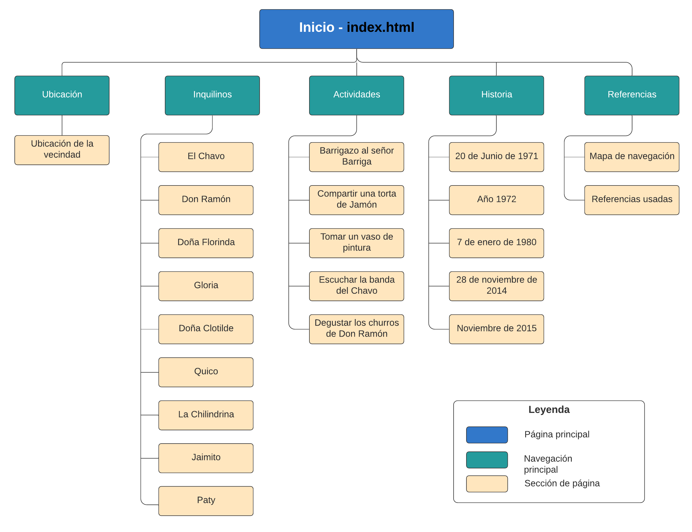
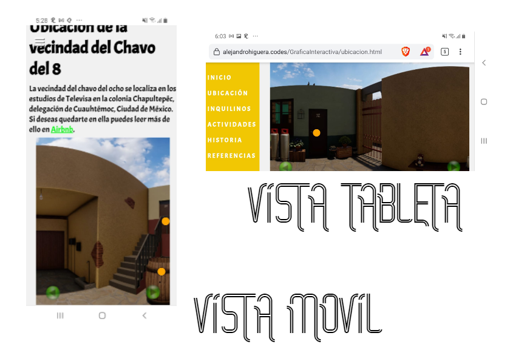

Mapa de navegación
Proceso de elaboración Mapa Interactivo
1. Proceso de elaboración de las tarjetas
Para la elaboración de las tarjetas se usó una alternativa gratuita a Photoshop,llamada Píxlr Editor, para ello se creo un nuevo lienzo transparente de 220x315px, se añadió un cuadro, texto, imágenes y un botón rojo con el que se pueda cerrar la tarjeta. Posteriormente se exportaron en formato png y se guardaron en la carpeta archivos del proyecto.

2. Libreria de JavaScript usada
Para el despliegue del mapa interactivo se usó la libreria de programación gráfica p5.js, la documentación de esta libreria puede encontrarse en p5js.org/reference.
Esta libreria consta de 3 funciones principales: preload() que nos permite cargar los archivos necesarios para la ejecución de nuestro script (Funciona como la función preload() de Phaser), setup() que nos permite ajustar las propiedades de nuestro script y draw() donde escribimos las acciones que queremos que se repitan durante la ejecución del Script (Funciona como la función update() de Phaser).
Para la correcta ejecución de esta librería, bastó con descargar la libreria del sitio de p5.js e incluir el archivo p5.min.js en el proyecto, el cual se puede encontrar en la carpeta libraries.
3. Implementación de botones
Para la implementación de los botones se uso la función circle() de p5.js que permite dibujar un círculo y se verificó con el booleano
if(mouseIsPressed & (posX-size<=mouseX & posX+size>=mouseX) & (posY-size<=mouseY & posY+size>=mouseY)) si se estaba presionando
el botón.
Al presionar el botón se cambia el color de este y se activa la tarjeta correspondiente, con el fin de dar la interacción buscada con el usuario.
4. Navegación por el mapa
El mapa presenta una navegación similar al ejemplo "palenque2" de Phaser enviado por el docente. Se puede navegar por el mapa presionando las ⬅️ y ➡️ en el caso de los computadores, y con los botones de la parte inferior en el caso de los dispositivos móviles. La imagen panorámica para este mapa fue obtenida de Youtube-La Vecindad 360°.
La navegación implementada facilita la implementación del diseño responsive y permite que en cualquier tamaño de dispositivo pueda ser consultado el mapa interactivo.
Cabe resaltar que se siguieron las indicaciones del docente en caso de hacer un mapa grande, la cual fue mover todos los objetos mientras se mueve el fondo esto fue posible gracias a la función translate() de p5.js que traslada todos elementos que se colocan con la función draw().
5. Redimensionamiento del canvas para cumplir con el RWD
Para permitir el redimensionamiento del canvas, se colocó un width de 100% en el estilo del div donde está contenido el canvas y se implementó una función dentro del script llamada adjustCanvas() que redimensiona el canvas de acuerdo al tamaño del dispositivo donde se consulta.
Esta función toma el ancho del dispositivo donde se consulta con document.body.clientWidth y cambia el estilo del canvas generado por p5.js
con document.getElementById("defaultCanvas0").style = "width:"+sizeX+"px; height:400px; margin:auto; display:block;";. El mapa al cambiarse
de tamaño puede seguir siendo navegado dado que maneja una imagen panorámica como fondo y por el punto 4 donde se nombra la parte de navegación.
A continuación se muestra la vista en móvil y en tableta:
Como es posible ver los botones también cambian de posición con el fin de adaptarse al cambio del tamaño del canvas,para ello se fijó su posición de acuerdo con el tamaño del canvas.
Referencias usadas
| Sitio web | Fin/Descripción |
|---|---|
| https://elchavo.fandom.com/es/wiki/Categoría:Personajes | Descripción/imágenes de personajes |
| https://tenor.com | Gifs de actividades |
| https://gfycat.com/gifs | Gifs de actividades |
| https://es.wikipedia.org/wiki/El_Chavo_del_8 | Historia de la serie |
| https://www.semana.com/cultura/articulo/cifras-del-exito-de-el-chavo-explican-batalla-legal-que-lo-saco-del-aire/691194/ | Cifras de audiencia |
| https://codepen.io/Luxplanjay/details/JparYJ | Deslizador en CSS |
| https://www.w3schools.com/css | Manejo de CSS |
| https://favpng.com/png_view/el-chavo-del-ocho-quico-phineas-flynn-drawing-deviantart-png/bKrBV0tj | Imagen transparente del Chavo |
| https://intriper.com/vecindad-del-chavo-del-8 | Ubicación de la vecindad del Chavo |
| https://developer.mozilla.org/es/docs/Web/CSS/td | Documentación y uso de CSS |
| https://p5js.org/reference/ | Documentación de la libreria p5.js |
| https://chavoanimado.com/personajes | Imágenes para las tarjetas del mapa |
| https://www.youtube.com/watch?v=ren-k2DTRvY | Vista de la vecindad del chavo en 360* |